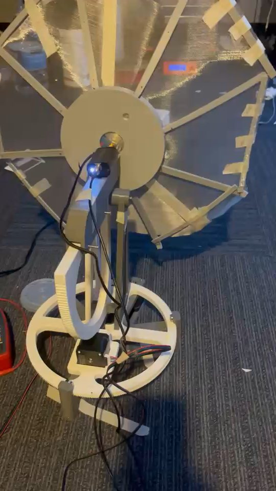
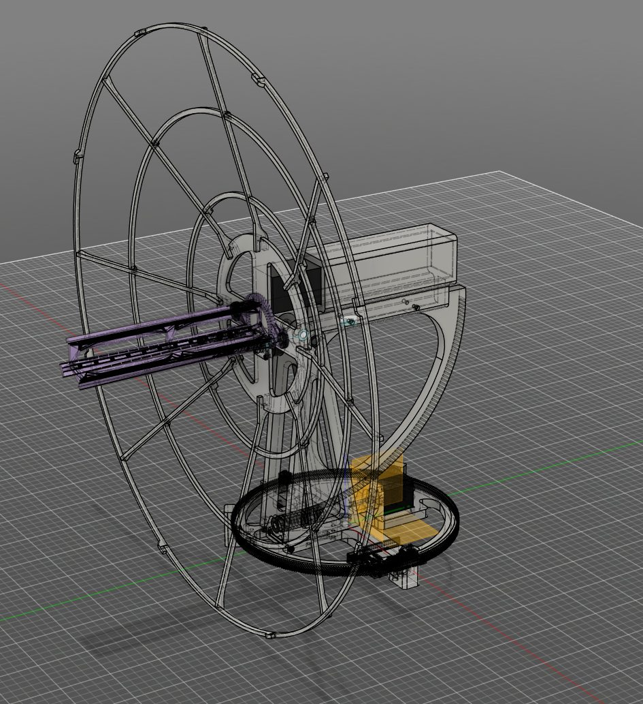
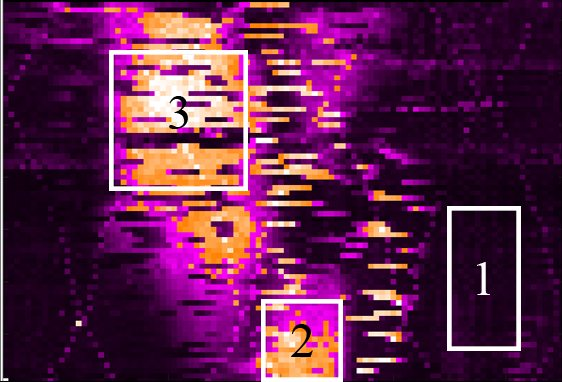
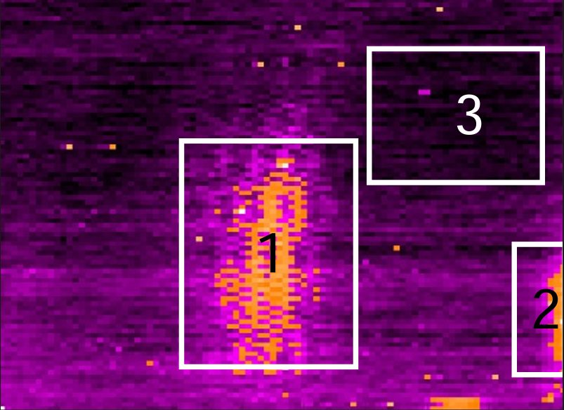
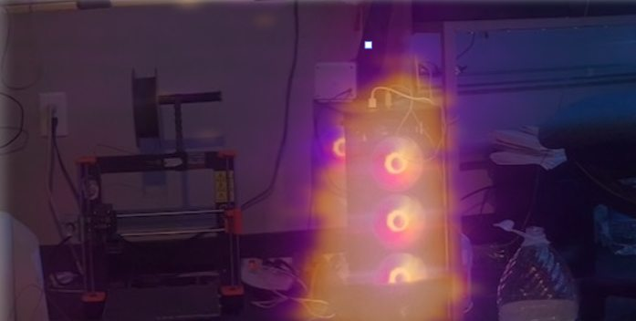
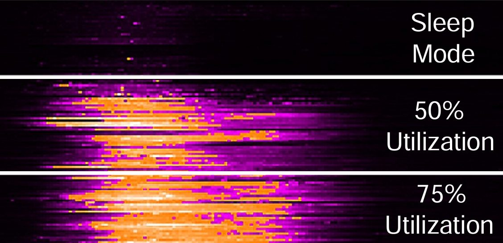
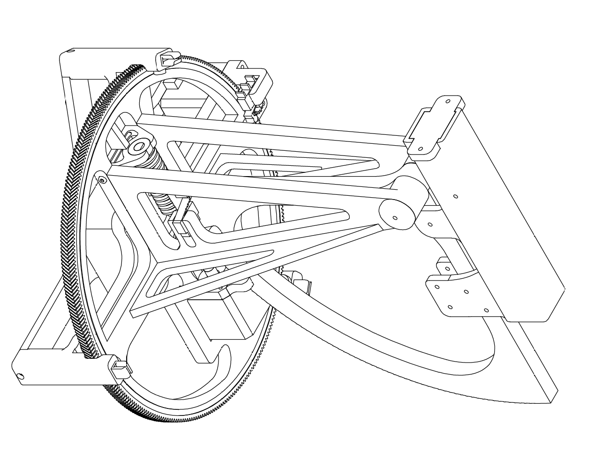
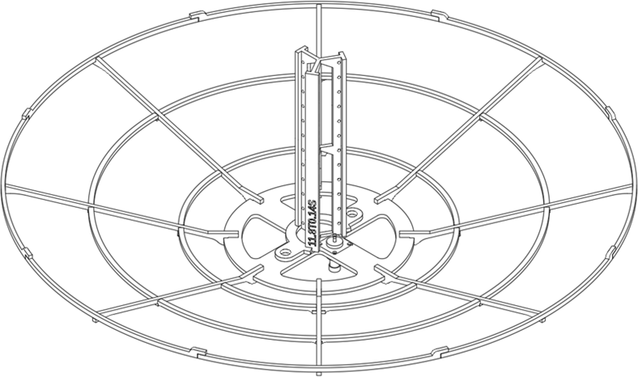

03 / 06 / Inventor
RadAround
A field-expedient direction finder for contested IoT sensing and EM situational awareness.
- MILCOM
- Published at IEEE MILCOM 2025
- 13.94 dBi
- Boresight gain at 2.4 GHz
- 30°
- 3 dB beamwidth
- < 1 day
- To build and deploy
Overview
Research Lead, first author
November 2024 to December 2025
RadAround is a passive 2-D direction finder that maps electromagnetic emissions as a heatmap. One narrow-beam antenna is steered mechanically across a scene while a software-defined radio samples each point.
It is built from parts available in the field: a 3D printer, a HackRF One, an Arduino, residential wire, chicken wire, and stepper motors scavenged from an office printer. MATLAB coordinates antenna positioning and SDR sampling.
I designed the helicone antennas, the steered platform, and the signal pipeline, validated the antennas in a far-field anechoic chamber, and presented the paper as first author at IEEE MILCOM 2025 in Los Angeles.








Highlights
- Detected a Wi-Fi router and a laptop through walls and doors
- Mapped a PC's processor utilization from a distance, including in sleep mode
- Two antennas: 2.4 GHz for the ISM band and 1.7 GHz for computing emissions
- 360° azimuth and 90° elevation on a 3D-printed worm-gear rotor
- Supported by the Embry-Riddle Office of Undergraduate Research
 Next projectModuMotor LLC
Next projectModuMotor LLC